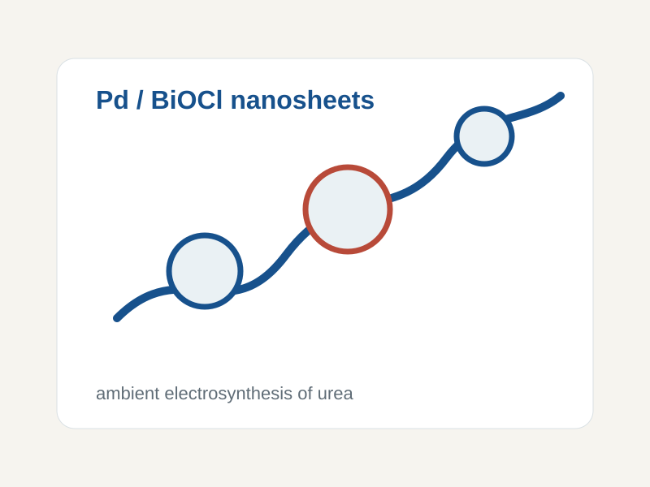

ACS Applied Materials & Interfaces 18 (19), 28310-28321
Nature Communications 17 (1), 2919
Advanced Science, e24014
Food Control, 111841
Materials Chemistry and Physics 344, 131191
ACS Sustainable Chemistry & Engineering 13 (27), 10563-10572
Journal of the American Chemical Society 147 (4), 3185-3194
Advanced Science
Nature Communications 15 (1), 10222
ACS Applied Materials & Interfaces 16 (21), 27329-27338
ACS Applied Nano Materials 7 (10), 11890-11899
Nature Catalysis 7 (5), 546-559
Advanced Materials 35 (44), 2305074
ChemElectroChem 10 (19), e202300272
Small Methods 7 (10), 2300234
Advanced Materials 35 (35), 2302966
ACS Catalysis 13 (16), 11023-11032
Advanced Functional Materials 33 (30), 2215148
Angewandte Chemie 135 (20), e202218924
Small 19 (19), 2207038
Nature Communications 14 (1), 2112
Nature Communications 14 (1), 1761
APL Materials, 10 (12)
Advanced Functional Materials 32 (51), 2208587
Advanced Functional Materials 32 (45), 2207618
International Journal of Hydrogen Energy 47 (39), 17367-17378
Journal of CO2 Utilization 58, 101920
Advanced Functional Materials 32 (16), 2110224
ACS Catalysis 12 (5), 3138-3148
Journal of Materials Chemistry A 10 (38), 20350-20364
Materials Chemistry and Physics 275, 125274
Journal of Materials Chemistry A 10 (37), 19671-19679
Joule 5 (12), 3221-3234
Journal of the American Chemical Society 144 (1), 416-423
Chemistry of Materials 33 (23), 9295-9305
Advanced Functional Materials 31 (43), 2104746
ACS Sustainable Chemistry & Engineering 9 (36), 12300-12310
Journal of Energy Storage 40, 102795
The Journal of Chemical Physics, 154 (16)
Sustainable Energy & Fuels 5 (6), 1668-1707
Advanced Energy Materials 10 (47), 2002860
ACS Sustainable Chemistry & Engineering 8 (45), 16757-16765
Journal of Power Sources 473, 228590
Renewable Energy 158, 324-331
Nature Communications 11 (1), 4233
RSC Advances 10 (20), 11543-11550
ACS Applied Energy Materials 2 (4), 2541-2551
ACS Sustainable Chemistry & Engineering 7 (3), 3185-3194
Applied Surface Science 462, 73-80
ACS Sustainable Chemistry & Engineering 6 (3), 3019-3028
Nature Communications 9 (1), 169
RSC Advances 8 (16), 8537-8543
Journal of Materials Chemistry A 6 (28), 13908-13917
Journal of Power Sources 364, 1-8
Journal of Power Sources 341, 270-279
Sustainable Energy & Fuels 1 (10), 2091-2100
Journal of Materials Chemistry A 4 (29), 11472-11480
RSC Advances 6 (104), 102068-102075
Journal of Physics and Chemistry of Solids 85, 62-68
Nano Letters 14 (11), 6097-6103
Nanoscale 5 (1), 262-268